O que todo plano inclui
Os mesmos itens e selos do Início: o que já está no T3jus e o que está a caminho, no mesmo plano. Nada sobre backup.


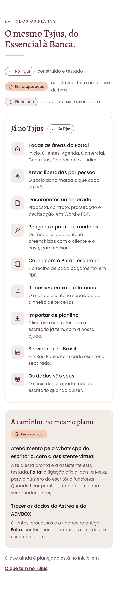
Quanto fica para cada tamanho de equipe
A tabela fixa no lugar da calculadora, sempre visível e sem script, com a frase do desconto abaixo; a indicação usa sempre o preço cheio.

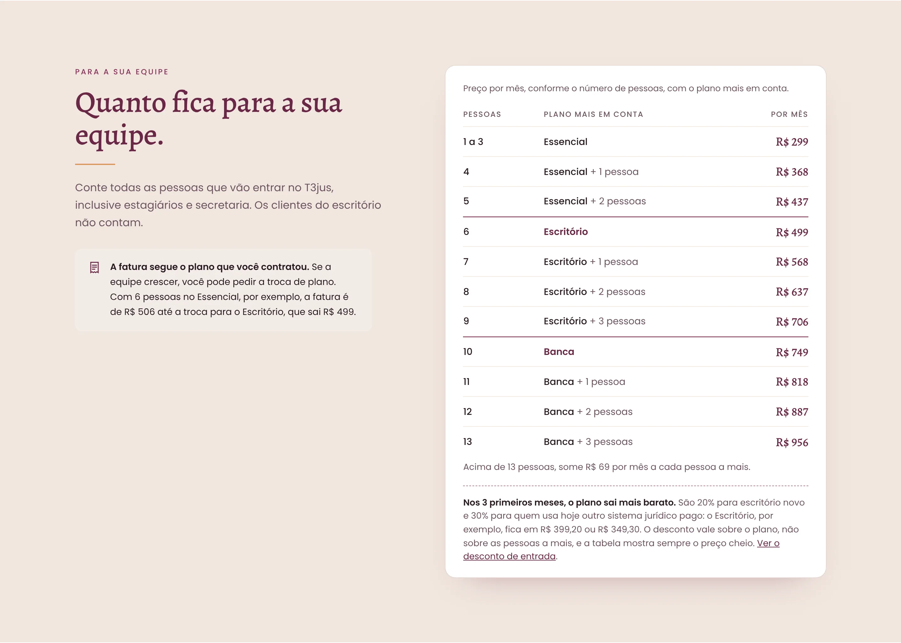

Como você paga e o que pode mudar
Formas de pagamento de hoje, condições (valor final, troca de plano, reajuste pelo IPCA, sem fidelidade) e o custo das mensagens da Meta.

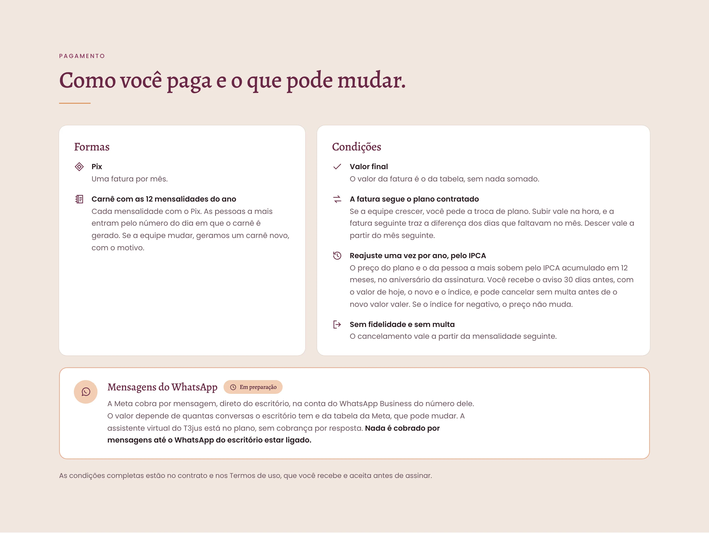

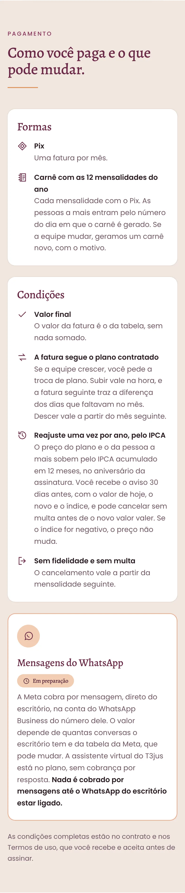
As seis perguntas frequentes, abertas
As respostas que a revisão pediu, inclusive a correção sobre a assistente atender o primeiro contato.

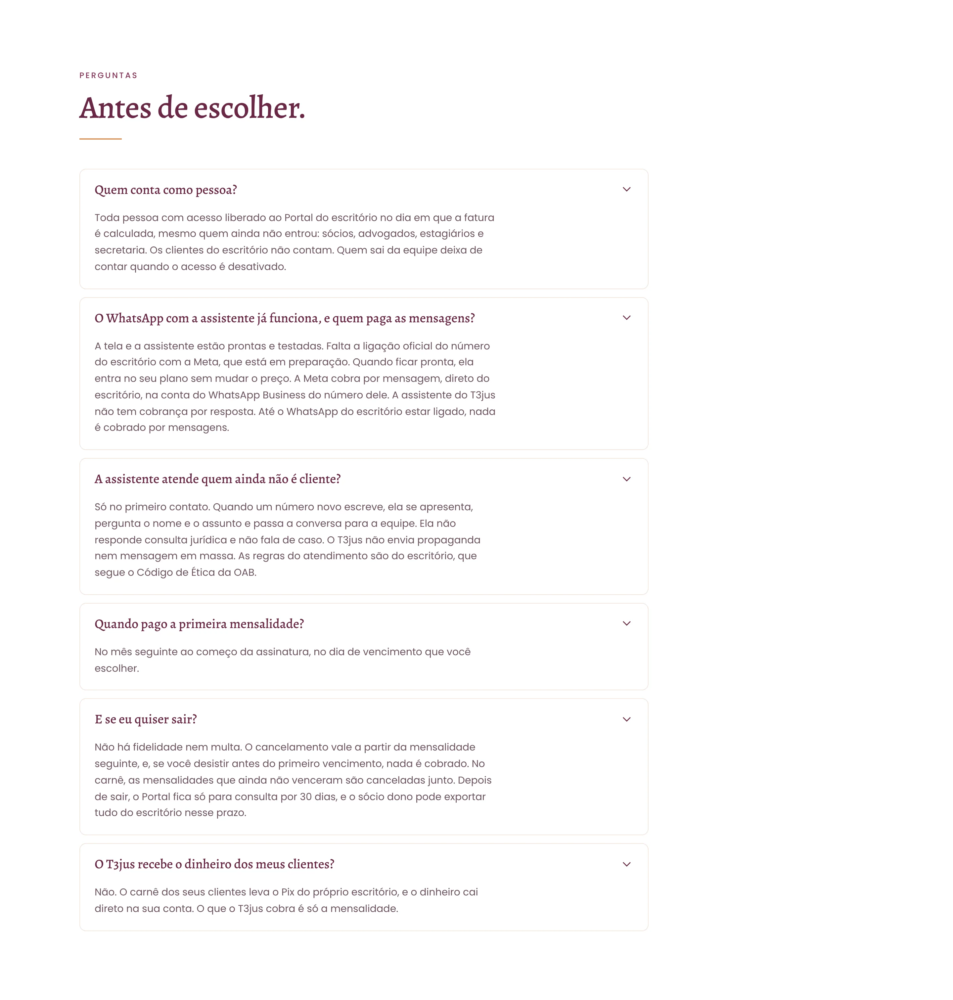

A chamada final de hoje
O campo âmbar com o selo inteiro: o e-mail é a ação principal enquanto o formulário está fechado.

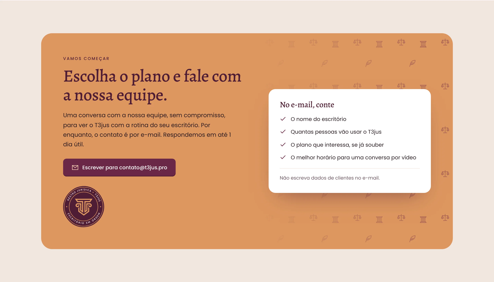

No meio da rolagem, com movimento
O topo já encolhido e a barra âmbar da leitura; as seções sobem ao aparecer, e os preços nunca ficam escondidos.

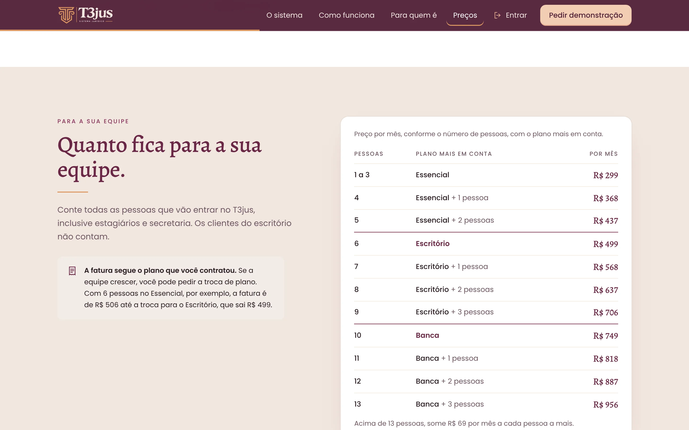

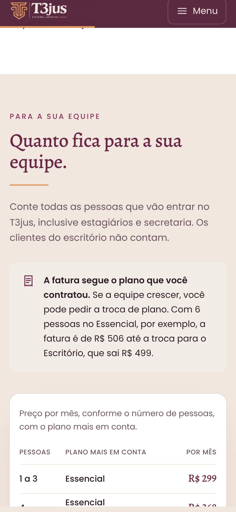


Os blocos que dependem de uma chave
Cada bloco ligado e desligado: teste, desconto, implantação com e sem data, formas de pagamento, cartão com e sem formulário e a chamada final.

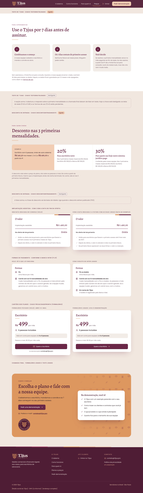

O item Preços no menu
No computador: hoje, 1440 px e 1021 px (cabe numa linha) e de 761 a 1020 px. No celular: o menu aberto com Planos e preços.

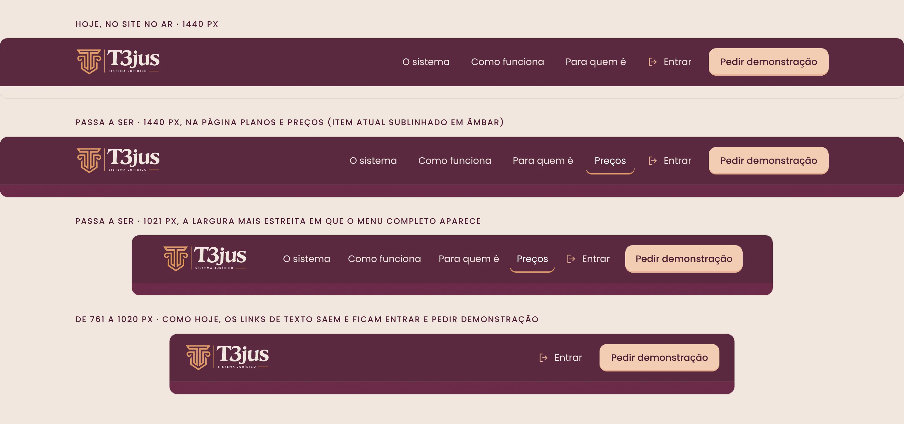

As chamadas que mudam nas outras páginas
Antes e depois no Início, em Para quem é, em Como funciona e em Demonstração, com o texto novo marcado em âmbar claro.

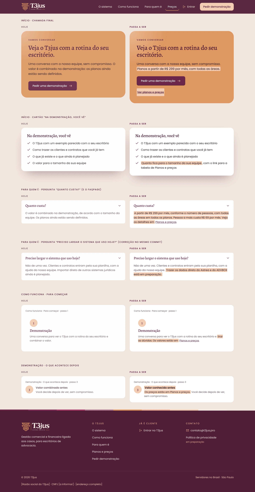